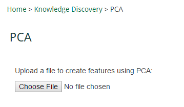

Data Mining: Principal Component Analysis (PCA) Feature Selection HELP
This application uses principal component analysis to create new features.
Step 1
Click the "Choose File" button and navigate to a CSV file that contains your data.

Step 2
A popup will appear listing all your data columns. Select multiple columns by holding SHIFT while clicking on
all columns you want to analyze. Click "Ok".
Step 3
A "RESULTS" link should appear. Click on this link to download a CSV file containing your new features.